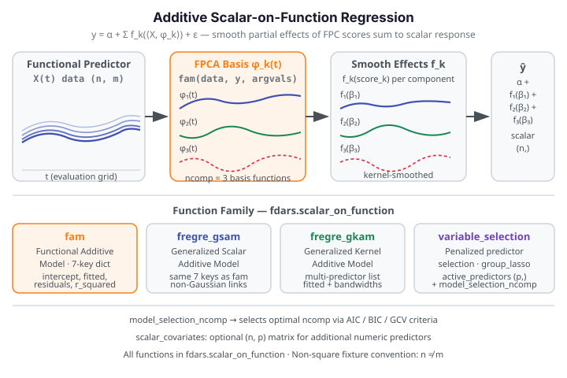

Additive Scalar-on-Function Regression¶
Additive Scalar-on-Function (SoF) regression predicts a scalar response from one or more functional predictors by decomposing the functional effect into a sum of smooth component functions. This is a nonparametric generalization of the classical linear SoF model that allows each predictor to contribute a non-linear partial effect while keeping the model interpretable.

Let \(y_i\) be a scalar response and \(X_{ij}(t)\) be the \(j\)-th functional predictor for observation \(i\). The additive SoF model takes the form:
where \(\phi_j\) are the leading FPCA basis functions for predictor \(j\) and each \(f_j\) is a smooth function of the corresponding FPC scores. The Functional Additive Model (FAM) estimates these smooth components jointly, providing a flexible alternative to simple linear projection while remaining far more parsimonious than a fully nonparametric approach.
Module path
All functions on this page are in the fdars.scalar_on_function submodule, not
fdars.regression. Use from fdars.scalar_on_function import fam, fregre_gsam,
fregre_gkam, variable_selection, model_selection_ncomp.
When to use¶
| Method | fdars function |
Key idea | Best when |
|---|---|---|---|
| Functional Additive Model | fam |
FPCA + smooth additive effects per component | Single functional predictor; non-linear but smooth relationship |
| Generalized Structured Additive | fregre_gsam |
Same as FAM; identical interface | Non-Gaussian responses or alternative link; same single-predictor case |
| Generalized Kernel Additive | fregre_gkam |
Kernel regression directly on curves, no FPCA | Multiple functional predictors; backfitting over kernels |
| Variable selection | variable_selection |
Group-LASSO over FPC projections | Many predictors; want to identify the active subset |
| Component count selection | model_selection_ncomp |
AIC/BIC/GCV over candidate component counts | Tuning ncomp before fitting fam or fregre_gsam |
Start with fam or fregre_gsam for a single functional predictor. They share the
same 7-key interface and both auto-select ncomp and bandwidth via GCV when the
defaults ncomp=0, bandwidth=0.0 are left in place.
Switch to fregre_gkam when you have multiple functional predictors — its backfitting
algorithm fits each predictor's additive effect in turn.
Use variable_selection when predictors are many and sparsity is expected; the
group-LASSO penalty zeros out uninformative predictor blocks entirely.
Link to the linear baseline: Scalar-on-Function Regression.
1. FAM — Functional Additive Model¶
fam fits a functional additive model with a single functional predictor. It projects the
predictor onto its leading FPCA components and estimates a smooth additive effect for each
component score.
from fdars.scalar_on_function import fam
result = fam(data, y, argvals,
scalar_covariates=None,
ncomp=0, # 0 = auto via GCV
bandwidth=0.0, # 0.0 = auto per component via GCV
kernel="gaussian",
n_grid_bandwidth=20)
Auto-selection defaults: ncomp=0 and bandwidth=0.0
The default values are ncomp=0 (auto via GCV) and bandwidth=0.0 (auto per
component via GCV). Older documentation incorrectly listed defaults of ncomp=3
and bandwidth=0.5 — these are wrong. Pass explicit values only when you want
to fix the tuning rather than letting GCV select it.
| Parameter | Type | Default | Description |
|---|---|---|---|
data |
np.ndarray (n, m) |
— | Functional predictor observations |
y |
np.ndarray (n,) |
— | Scalar response vector |
argvals |
np.ndarray (m,) |
— | Evaluation grid |
scalar_covariates |
np.ndarray (n, q) or None |
None |
Optional additional scalar predictors |
ncomp |
int |
0 |
Number of FPCA components (0 = auto via GCV) |
bandwidth |
float |
0.0 |
Bandwidth for smooth component estimator (0.0 = auto via GCV) |
kernel |
str |
"gaussian" |
Kernel type: "gaussian", "epanechnikov", "tricube" |
n_grid_bandwidth |
int |
20 |
Bandwidth grid size for GCV selection |
Return dict (7 keys):
| Key | Type | Description |
|---|---|---|
fitted_values |
np.ndarray (n,) |
Fitted scalar responses, one per observation |
residuals |
np.ndarray (n,) |
Raw residuals |
component_fits |
list of np.ndarray (n,) |
Per-FPC smooth partial effects, one array per component |
intercept |
float |
Model intercept |
bandwidths |
np.ndarray (ncomp,) |
Selected bandwidth per FPCA component |
ncomp |
int |
Number of FPCA components actually used (after GCV if ncomp=0) |
r_squared |
float |
Global R² |
import numpy as np
from fdars.scalar_on_function import fam
rng = np.random.default_rng(42)
n, m = 25, 30
t = np.linspace(0, 1, m)
data = np.array([np.sin(2 * np.pi * t + rng.uniform(0, 0.5)) for _ in range(n)])
y = np.array([np.trapezoid(data[i] ** 2, t) + 0.1 * rng.standard_normal() for i in range(n)])
result = fam(data, y, t, ncomp=3, bandwidth=0.5)
print(f"ncomp used: {result['ncomp']}")
print(f"r_squared: {result['r_squared']:.4f}")
print(f"fitted shape: {np.asarray(result['fitted_values']).shape}")
print(f"bandwidths: {np.round(np.asarray(result['bandwidths']), 3)}")
print("FDARS_FENCE_OK")
ncomp used: 3 r_squared: 0.0002 fitted shape: (25,) bandwidths: [0.5 0.5 0.5] FDARS_FENCE_OK
2. fregre_gsam — Generalized Structured Additive Model¶
fregre_gsam shares the exact same signature and return structure as fam — 7 identical
keys. It uses a generalized additive framework that can accommodate non-Gaussian responses
through a link function.
from fdars.scalar_on_function import fregre_gsam
result = fregre_gsam(data, y, argvals,
scalar_covariates=None,
ncomp=0, # 0 = auto via GCV
bandwidth=0.0, # 0.0 = auto per component via GCV
kernel="gaussian",
n_grid_bandwidth=20)
The returned dict has the same 7 keys as fam: fitted_values, residuals,
component_fits, intercept, bandwidths, ncomp, r_squared.
FAM vs GSAM
For Gaussian responses, fam and fregre_gsam produce similar fits. Prefer
fregre_gsam when a non-identity link function is appropriate for your response
distribution.
3. fregre_gkam — Generalized Kernel Additive Model¶
fregre_gkam fits additive effects using kernel regression directly on the raw functional
curves, without an intermediate FPCA step. It handles multiple functional predictors
simultaneously via a backfitting algorithm.
from fdars.scalar_on_function import fregre_gkam
result = fregre_gkam(predictors, y, argvals_list,
scalar_covariates=None,
bandwidth=0.0, # 0.0 = auto per predictor via GCV
kernel="gaussian",
max_iter=50,
epsilon=1e-6)
| Parameter | Type | Default | Description |
|---|---|---|---|
predictors |
list of np.ndarray (n, m_p) |
— | One array per functional predictor |
y |
np.ndarray (n,) |
— | Scalar response |
argvals_list |
list of np.ndarray (m_p,) |
— | Evaluation grid per predictor |
scalar_covariates |
np.ndarray (n, q) or None |
None |
Optional scalar predictors |
bandwidth |
float |
0.0 |
Kernel bandwidth (0.0 = auto per predictor via GCV) |
kernel |
str |
"gaussian" |
Kernel type |
max_iter |
int |
50 |
Maximum backfitting iterations |
epsilon |
float |
1e-6 |
Convergence tolerance |
Return dict (8 keys):
| Key | Type | Description |
|---|---|---|
fitted_values |
np.ndarray (n,) |
Fitted scalar responses |
residuals |
np.ndarray (n,) |
Raw residuals |
component_fits |
list of np.ndarray (n,) |
Per-predictor partial effects |
intercept |
float |
Model intercept |
bandwidths |
np.ndarray (P,) |
Selected bandwidth per predictor |
iterations |
int |
Number of backfitting iterations performed |
converged |
bool |
Whether backfitting reached the convergence tolerance |
r_squared |
float |
Global R² |
GKAM backfitting convergence
Always check result['converged'] after calling fregre_gkam. If converged is
False, try increasing max_iter (default 50) or loosening epsilon (default
1e-6). The number of iterations performed is in result['iterations']. With many
predictors, backfitting may be slow — reduce max_iter during exploration and then
confirm convergence with the full budget.
import numpy as np
from fdars.scalar_on_function import fregre_gkam
rng = np.random.default_rng(7)
n, m = 25, 20
t = np.linspace(0, 1, m)
# Two functional predictors
x1 = np.array([np.sin(2 * np.pi * t + rng.uniform(0, 0.3)) for _ in range(n)])
x2 = np.array([np.cos(np.pi * t + rng.uniform(0, 0.5)) for _ in range(n)])
y = (np.array([np.trapezoid(x1[i], t) for i in range(n)])
+ 0.5 * np.array([np.trapezoid(x2[i] ** 2, t) for i in range(n)])
+ 0.1 * rng.standard_normal(n))
result = fregre_gkam([x1, x2], y, [t, t], bandwidth=0.3, max_iter=50)
print(f"converged: {result['converged']}")
print(f"iterations: {result['iterations']}")
print(f"r_squared: {result['r_squared']:.4f}")
print(f"bandwidths: {np.round(np.asarray(result['bandwidths']), 3)}")
print(f"n_components: {len(result['component_fits'])}")
print("FDARS_FENCE_OK")
converged: False iterations: 50 r_squared: 0.0004 bandwidths: [0.3 0.3] n_components: 2 FDARS_FENCE_OK
4. variable_selection — Predictor Selection¶
For multi-predictor settings, variable_selection identifies which functional predictors
are relevant using a penalized FPCA projection regression.
from fdars.scalar_on_function import variable_selection
sel = variable_selection(predictors, y, argvals_list,
scalar_covariates=None,
ncomp=3,
penalty="group_lasso",
lambda_=0.0, # 0.0 = auto via lambda grid
max_iter=100,
epsilon=1e-5,
lambda_n_grid=20)
| Parameter | Type | Default | Description |
|---|---|---|---|
predictors |
list of np.ndarray (n, m_p) |
— | One array per functional predictor |
y |
np.ndarray (n,) |
— | Scalar response |
argvals_list |
list of np.ndarray (m_p,) |
— | Evaluation grid per predictor |
ncomp |
int |
3 |
Number of FPCA components per predictor |
penalty |
str |
"group_lasso" |
Penalty type: "group_lasso" or "ls" |
lambda_ |
float |
0.0 |
Regularization strength (0.0 = auto via grid) |
max_iter |
int |
100 |
Maximum iterations |
epsilon |
float |
1e-5 |
Convergence tolerance |
lambda_n_grid |
int |
20 |
Lambda grid points for auto selection |
Return dict (9 keys):
| Key | Type | Description |
|---|---|---|
active_predictors |
np.ndarray (P,) bool |
True for each predictor selected by the penalty |
coefficients |
list of np.ndarray |
Estimated FPCA coefficient vectors, one per predictor |
fitted_values |
np.ndarray (n,) |
Fitted scalar responses |
residuals |
np.ndarray (n,) |
Raw residuals |
intercept |
float |
Model intercept |
lambda |
float |
Regularization strength used (auto-selected if lambda_=0.0) |
r_squared |
float |
Global R² |
iterations |
int |
Iterations performed by the optimization |
converged |
bool |
Whether the optimization converged |
Supported penalties: "group_lasso" and "ls" only. Penalties "group_mcp" and
"group_scad" raise ValueError (not yet implemented in fdars-core 0.33).
5. model_selection_ncomp — Component Count Selection¶
Selects the optimal number of FPCA components using information criteria, useful for
tuning ncomp before a FAM or GSAM fit.
from fdars.scalar_on_function import model_selection_ncomp
ms = model_selection_ncomp(data, response, max_comp=10, criterion="gcv")
Use max_comp — not the old name
The parameter controlling the maximum component count is named max_comp.
Older documentation used a different name; using the old spelling as a
keyword argument raises TypeError. Pass the value as max_comp=10.
| Parameter | Type | Default | Description |
|---|---|---|---|
data |
np.ndarray (n, m) |
— | Functional predictor |
response |
np.ndarray (n,) |
— | Scalar response |
max_comp |
int |
10 |
Maximum number of components to evaluate |
criterion |
str |
"gcv" |
Selection criterion: "aic", "bic", or "gcv" |
Return dict (2 keys):
| Key | Type | Description |
|---|---|---|
best_ncomp |
int |
Optimal component count per the chosen criterion |
criteria |
list of (ncomp, aic, bic, gcv) tuples |
Criterion values for each candidate count |
6. Parameter Selection¶
Choosing ncomp and bandwidth for fam / fregre_gsam¶
Leave both at their defaults (ncomp=0, bandwidth=0.0) to let GCV choose
automatically. Use model_selection_ncomp beforehand if you want an explicit
criterion-comparison table:
import numpy as np
from fdars.scalar_on_function import model_selection_ncomp
rng = np.random.default_rng(42)
n, m = 30, 30
t = np.linspace(0, 1, m)
data = np.array([np.sin(2 * np.pi * t + rng.uniform(0, 0.5)) for _ in range(n)])
y = np.array([np.trapezoid(data[i] ** 2, t) + 0.1 * rng.standard_normal() for i in range(n)])
ms = model_selection_ncomp(data, y, max_comp=8, criterion="gcv")
print(f"best_ncomp (GCV): {ms['best_ncomp']}")
print("ncomp | AIC | BIC | GCV")
for row in ms["criteria"]:
print(f" {row[0]:2d} | {row[1]:.4f} | {row[2]:.4f} | {row[3]:.4f}")
print("FDARS_FENCE_OK")
best_ncomp (GCV): 1 ncomp | AIC | BIC | GCV 1 | -148.2950 | -145.4926 | 0.0073 2 | -146.2952 | -142.0916 | 0.0082 FDARS_FENCE_OK
Backfitting convergence for fregre_gkam¶
The GKAM backfitting algorithm cycles through predictors, updating each partial effect
while holding the others fixed. Check result['converged'] and result['iterations']
after every fit. Typical convergence requires 10–30 iterations for 2–5 predictors.
Increase max_iter if convergence is slow; widen epsilon slightly if the algorithm
cycles without converging.
7. Result Interpretation¶
Component fits — partial effects per predictor¶
component_fits in all three models (fam, fregre_gsam, fregre_gkam) is a Python
list of 1-D arrays, one per FPCA component (FAM/GSAM) or per predictor (GKAM). Each
array has length n and contains the fitted partial effect for that component across all
observations.
For fam and fregre_gsam: component_fits[k] is the contribution of the k-th
FPCA score to the fitted value. Plot them against the corresponding FPCA score to see the
shape of the smooth function \(f_k\).
For fregre_gkam: component_fits[k] is the fitted partial effect of the k-th
functional predictor. Plotting each array shows how much each predictor contributes to
the fit.
Interpreting active_predictors from variable_selection¶
active_predictors is a boolean array of length P (number of predictors). A True
entry means the group-LASSO penalty kept that predictor's coefficient block non-zero —
it is considered informative. False means the penalty drove that block to zero.
Choosing lambda_: smaller values retain more predictors; larger values remove more.
With lambda_=0.0 (default), the function searches a grid of 20 lambda values
(lambda_n_grid=20) and picks the one that minimizes the penalized criterion. Inspect
result['lambda'] to see the chosen value.
8. Figure: Partial-Effect Curves from FAM¶
import numpy as np
from docs_fig import fig, render
from fdars.scalar_on_function import fam
rng = np.random.default_rng(42)
n, m = 30, 40
t = np.linspace(0, 1, m)
# Functional predictor: sine waves with random phase
data = np.array([np.sin(2 * np.pi * t + rng.uniform(0, 0.8)) for _ in range(n)])
# Response: nonlinear in the L2 norm of the curve
y = np.array([np.trapezoid(data[i] ** 2, t) + 0.05 * rng.standard_normal() for i in range(n)])
result = fam(data, y, t, ncomp=3, bandwidth=0.5)
# Plot partial-effect contributions (component_fits) for the first 3 FPCs
# sorted by the FPC scores to reveal the smooth function shape
# Compute FPC scores to sort along x-axis
cfs = result["component_fits"]
ncomp_used = result["ncomp"]
f, ax = fig()
colors = ["#3f51b5", "#e8710a", "#198754"]
for k in range(min(ncomp_used, 3)):
cf = np.asarray(cfs[k])
# Sort by component_fit value to plot the smooth curve cleanly
order = np.argsort(cf)
label = f"Component {k+1}"
ax.plot(np.arange(n)[order] / n, cf[order], color=colors[k], lw=2, label=label)
ax.set(
title="FAM partial-effect curves per FPCA component",
xlabel="Observation rank (sorted by component fit)",
ylabel="Partial effect contribution",
)
ax.legend()
print(render(f))
print("FDARS_FENCE_OK")
Methods available in the R package but not (yet) in Python¶
Methods available in the R package but not (yet) in Python
The "group_mcp" and "group_scad" penalty options for variable_selection
are not yet implemented in fdars-core 0.33 — passing them raises ValueError.
Only "group_lasso" and "ls" are supported.
References¶
- Müller, H.-G. and Yao, F. (2008). Functional additive models. Journal of the American Statistical Association 103(484), 1534–1544.
- Fan, J. and Zhang, J.-T. (2000). Two-step estimation of functional linear models with applications to longitudinal data. Journal of the Royal Statistical Society B 62(2), 303–322.
- Marx, B. D. and Eilers, P. H. C. (1999). Generalized linear regression on sampled signals and curves: A P-spline approach. Technometrics 41(1), 1–13.
See also¶
- Scalar-on-Function Regression — linear SoF baseline;
use
fam/fregre_gsamwhen the linear assumption is too restrictive - Robust Regression — when outliers are also present alongside additive nonlinearity
- Cross-Validation — bandwidth and
ncompselection strategies; themodel_selection_ncompfunction ties directly into this workflow - Regression index — overview of all regression methods in
fdars